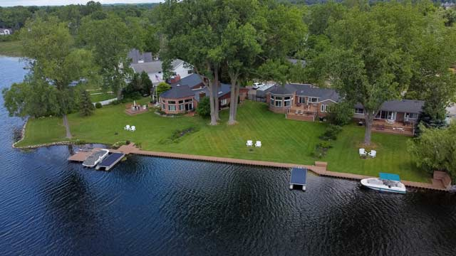
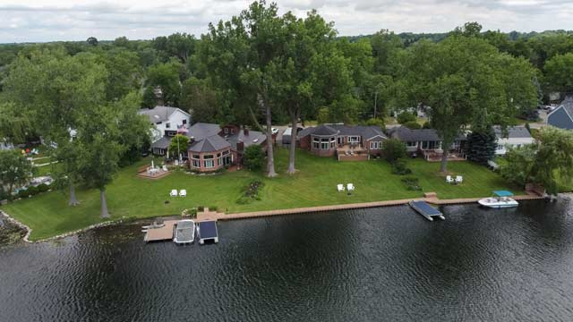
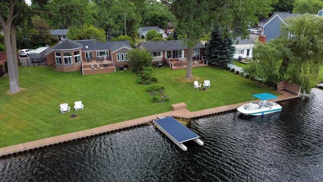
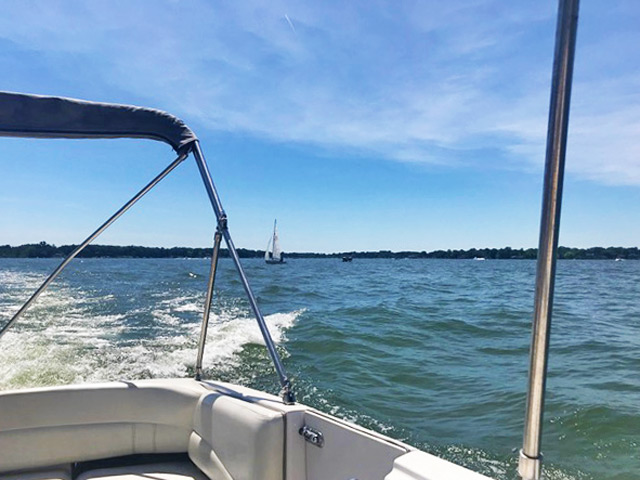
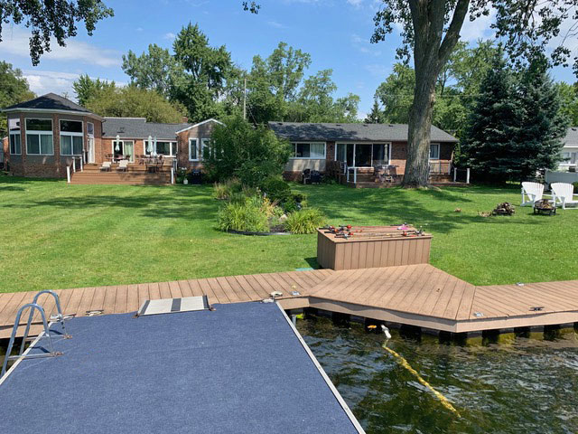
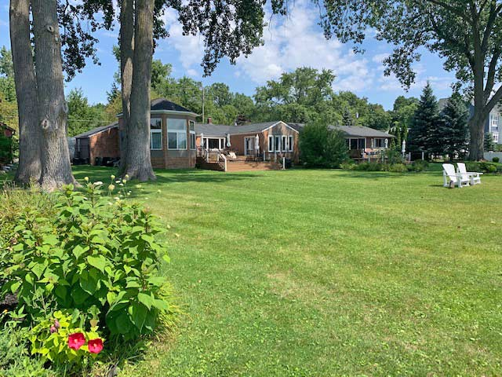
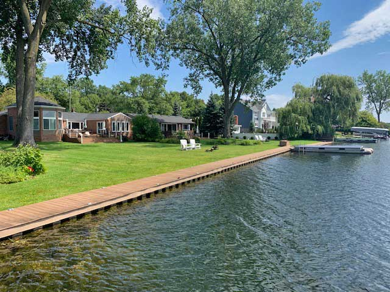
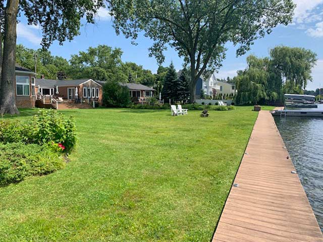
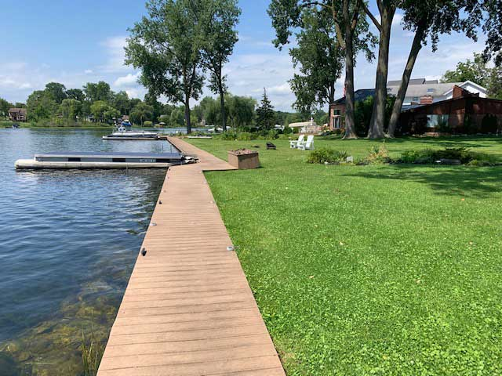
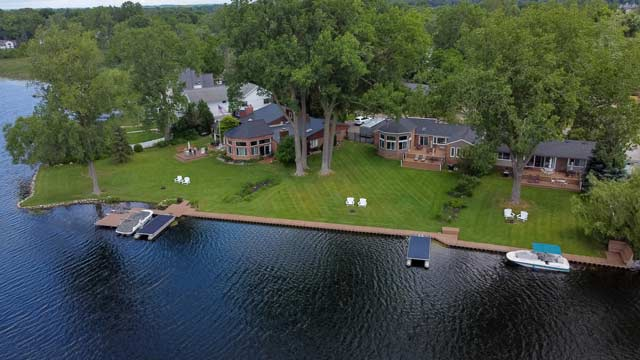
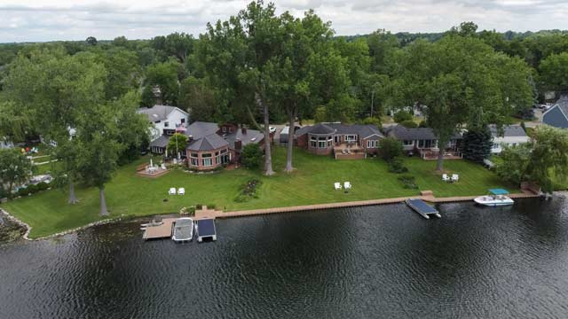
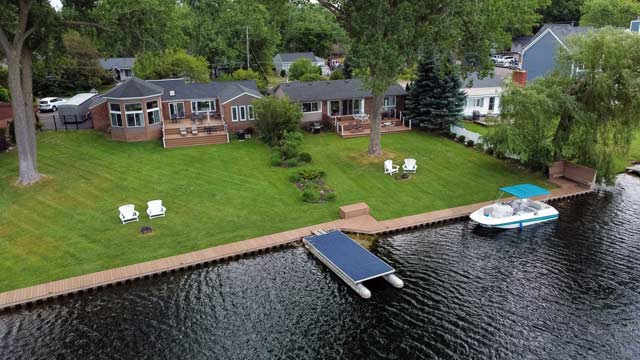
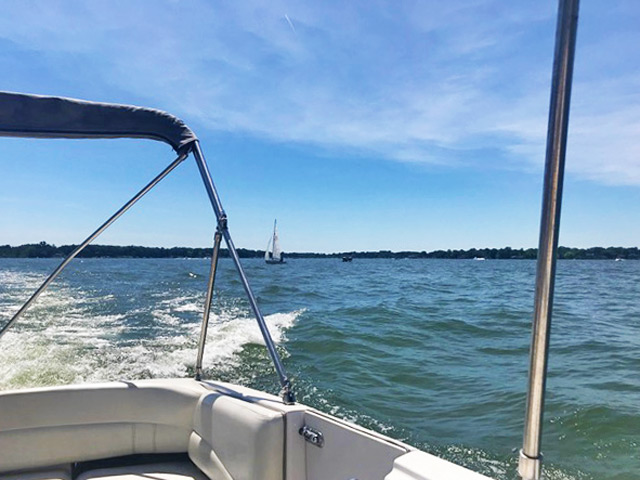
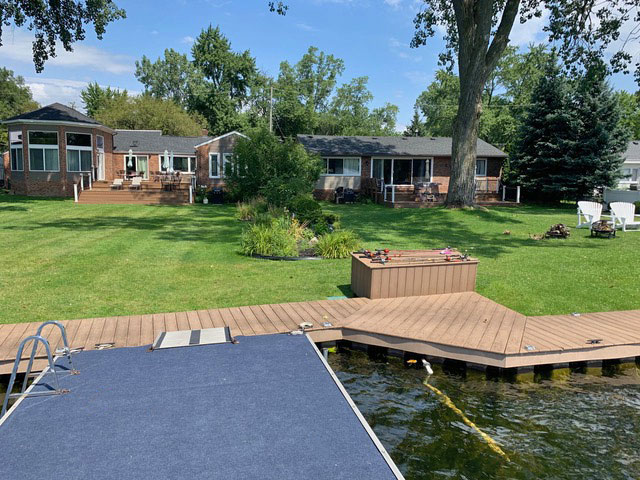
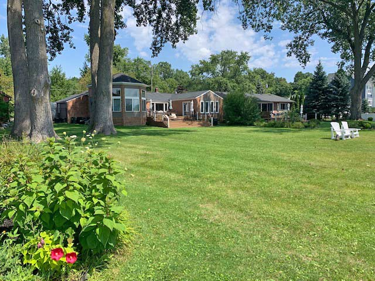
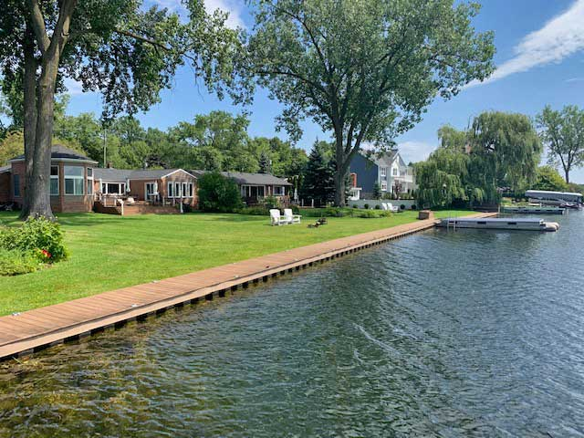
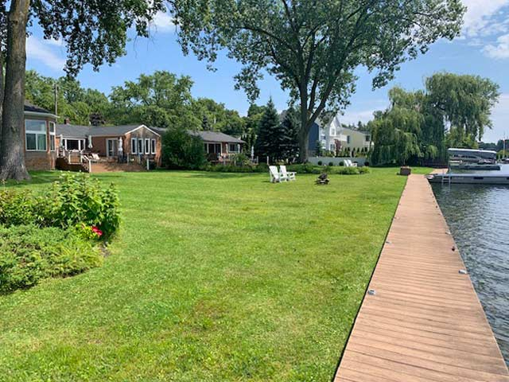
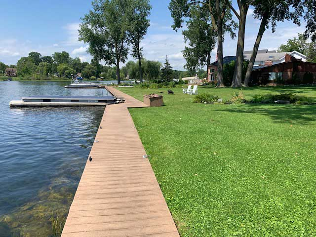
THE LAKE HOUSE ON CASS LAKE, LLC and SUNSET COTTAGE, LLC are located on tranquil Cass Lake Bay. Cass Lake is the largest, 1280 acres, inland, all-sports lake in Southeastern Michigan. Located in Oakland County, Cass Lake is so large it touches four cities: Orchard Lake, West Bloomfield, Keego Harbor, and Waterford Township. The State Park, Dodge Park #4, has one mile of shoreline with a beautiful sandy beach and is located at the beginning of Cass Lake Bay. The Dodge Park boat launch is very convenient for the lake houses.
While you are visiting friends and family, this is a great place to invite them to visit you at the lake. Bring your boat as there are cleats for docking two boats in front of each house, or rent a pontoon boat, kayak, or paddle board from a local marina. Cruise the 1280-acre lake and see some of the unique homes and 20,000 plus sq. ft. mansions. Marsh Bank Park is also on the lake and has a children"s play center. Enjoy free concerts during the summer months.
There is a seawall and boardwalk great for fishing and an adjacent swim dock with ladder. On the bay, swim, fish, watch the swans, enjoy a lakefront game of bocce or bean bag toss before your sunset bonfire. Toast some marshmallows while enjoying the colors of the sunset.
Experience the “Up North” feeling of autumn’s color and the glistening snow of winter when looking at the trees across the bay. All the seasons are magical!
In the winter, ice fish on Cass Lake!
We are also within minutes of Michigan’s Ski Lodges: Pine Knob, Mt. Holly and Alpine Valley.
Golf courses in the area include: Brentwood, Pontiac Golf Club, Mystic Creek and the private courses nearby are: Orchard Lake Country Club, Pine Lake C.C., Oakland Hills C.C. and Forest Lake Country Club.
SUNSET COTTAGE, LLC and THE LAKE HOUSE ON CASS LAKE, LLC are ideal for family vacations and reunions or just getting together with friends.
Visit trendy outdoor restaurants, theaters and shopping in West Bloomfield, Bloomfield Hills, Birmingham, Royal Oak and Ferndale to name a few.
In Detroit, attractions include: